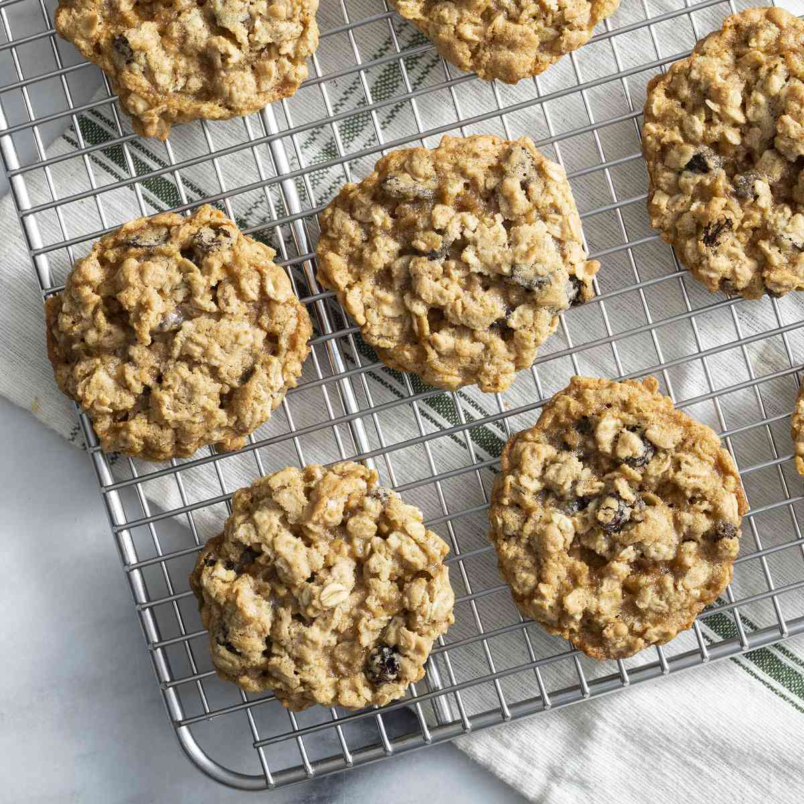

This is my go to recipe for oatmeal raisin cookies.
If you want chocolate chip cookies you can just replace the raisins in the recipe with chocolate chips.

Ingredients
¾ cup butter, softened
¾ cup white sugar
¾ cup packed light brown sugar
2 large eggs
1 teaspoon vanilla extract
1¼ cups all-purpose flour
1 teaspoon baking soda
¾ teaspoon ground cinnamon
½ teaspoon salt
2¾ cups rolled oats
1 cup raisins
Instructions
Preheat the oven to 375 degrees F (190 degrees C)
Line two cookie sheets with parchment paper or silicone liners.
Beat butter, white sugar, and brown sugar in a large bowl until smooth and creamy.
Beat in eggs and vanilla until fluffy.
Stir together flour, baking soda, cinnamon, and salt.
Gradually beat into the butter mixture.
Stir in oats and raisins.
Drop teaspoonfuls of batter onto the prepared cookie sheets.
Bake in the preheated oven until golden brown, 8 to 10 minutes, switching racks halfway through.
Remove from the oven and let sit on the cookie sheets for 1 to 2 minutes before transferring cookies to a wire rack to cool completely.